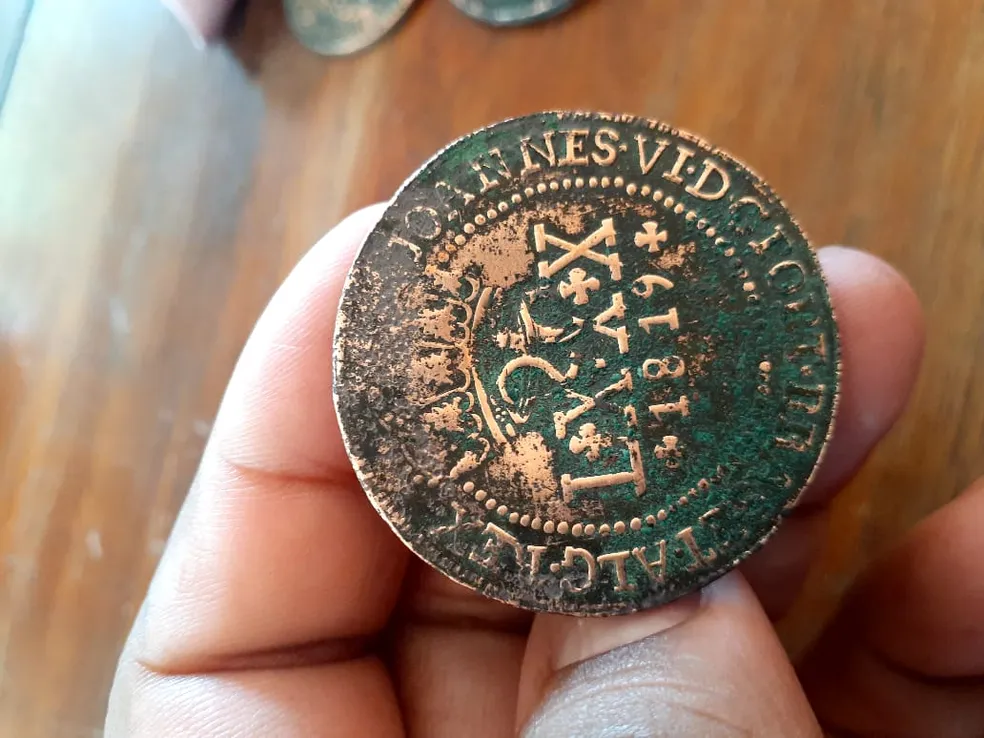

Moeda Rara do Século XIX

Descubra a história por trás desta moeda rara, que representa uma época de grandes transformações econômicas.
A numismática é o estudo e coleção de moedas, notas e outros itens relacionados à história monetária. Seja você um colecionador iniciante ou um especialista, este site irá guiá-lo por um mundo fascinante de moedas e notas raras.
Descubra a história por trás desta moeda rara, que representa uma época de grandes transformações econômicas.
Conheça a evolução das notas monetárias e as principais coleções que marcaram a história.
Em nosso site, você encontrará uma vasta coleção de moedas e notas, histórias sobre colecionadores e as raridades que podem estar escondidas em sua coleção!